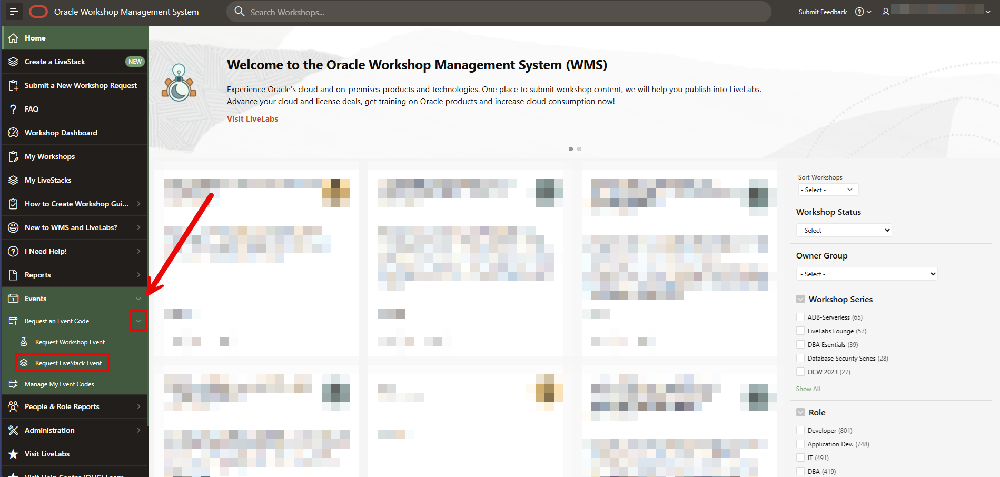
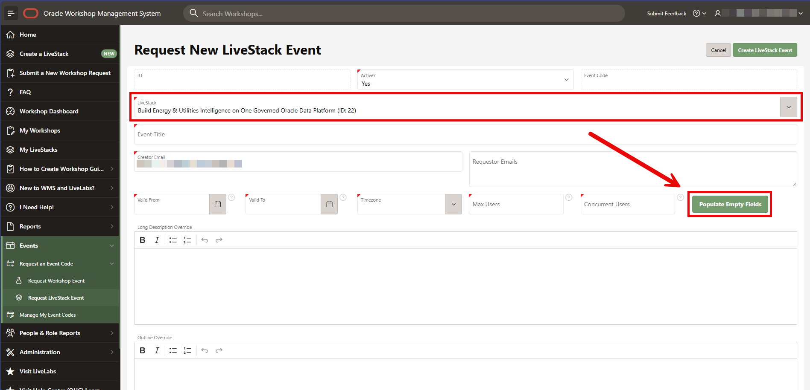
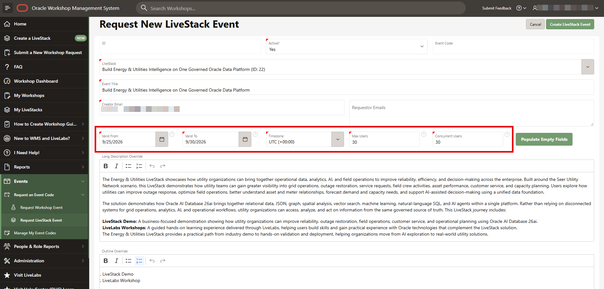
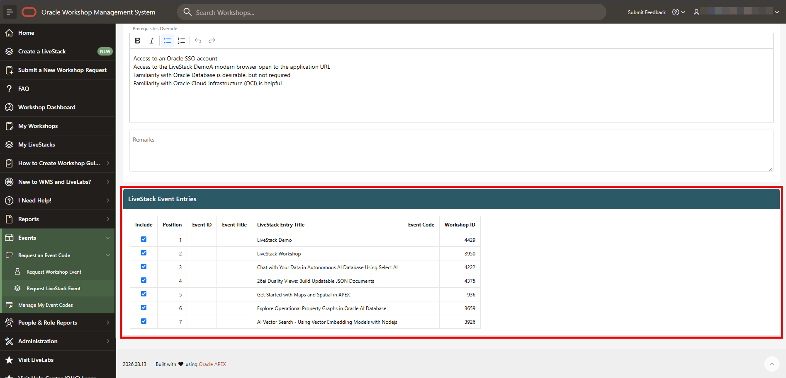
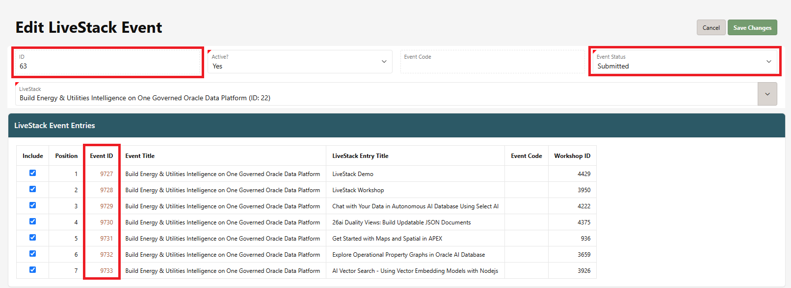
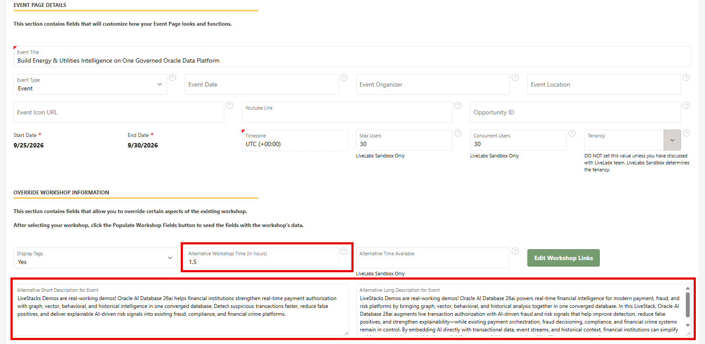
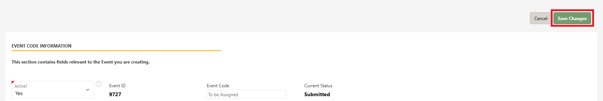

WMS event guide
Create a LiveStack event
Create an event for an existing bundle, choose the included entries, and verify the generated workshop events.
Search the introduction, LiveLabs guide, and WMS guides.
Before you start: have WMS event access, the LiveStack name, event dates and time zone, audience size, and requestor details. Screenshots show example values from the draft event workflow.
Step 1
Open the LiveStack event request
- Sign in to WMS.
- Expand Events → Request an Event Code.
- Select Request LiveStack Event.
Expected result: the Request New LiveStack Event form opens.
Use this workflow for a bundle. Request Workshop Event is the separate single-workshop workflow.


Step 2
Select and populate the LiveStack
- Open the LiveStack selector and search for the bundle.
- Select the matching name and ID, then select Populate Empty Fields on the event form.
- Review the event title, copied description, outline, prerequisites, and entry list.
Expected result: the form contains the selected bundle’s information and candidate event entries.
Confirm the bundle ID as well as the title. Do not rely on similar industry names.


Step 3
Set the schedule, contacts, and capacity
- Check Active?, Event Title, Creator Email, and Requestor Emails.
- Set Valid From, Valid To, and Timezone.
- Set Max Users and Concurrent Users for your session.
- Review the description, outline, and prerequisites overrides; add relevant remarks.
Use Populate Empty Fields if needed, then inspect the values. Do not assume that this replaces information already entered.
Capacity values are not a provisioning guarantee. Confirm the workshop environment and event readiness before inviting attendees.


Step 4
Choose which entries belong in the event
- Scroll to LiveStack Event Entries.
- Review each entry title, Workshop ID, and position.
- Use Include to keep only the entries needed for your session.
Expected result: the selected entries match the event agenda.
Event IDs and event codes may be blank before creation. A workshop ID identifies source content, not an event.


Step 5
Create the event and inspect the result
- Review the request, then select Create LiveStack Event.
- On Edit LiveStack Event, check the parent event ID and Event Status.
- Check the included rows for their generated Event IDs.
Expected result: a parent LiveStack event and linked workshop-event records for the included entries.
Submitted is not ready to share. The example is Submitted with blank event codes. Verify the actual status and code availability before distributing access instructions.


Step 6
Verify each workshop event before sharing
- Open an included row’s Event ID.
- Confirm the workshop, event title, dates, time zone, attendance limits, and required fields.
- Use Populate Workshop Fields where appropriate, then review the resulting descriptions and duration.
- Complete the remaining event-specific fields and select Save Changes.
- Repeat for the other included entries; return through Events → Manage My Event Codes to verify status and available codes.
Review copied text. An event’s bundle title and an entry’s workshop description can refer to different content. Correct misleading overrides before sharing.
Only distribute confirmed event access details after checking the intended attendee experience.


See the final Save Changes control


Screenshots: supplied WMS LiveStack event walkthrough, September 2026. Field labels and availability may change as the feature develops.